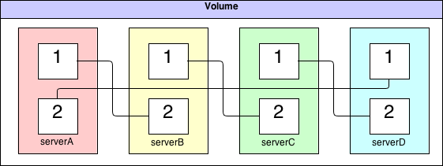

GlusterFS 1010
| Author: | Aaron Toponce |
|---|---|
| Email: | aaron.toponce@gmail.com |
| Date: | March 19, 2013 |
Contact and Details
You can find the source code, PDF, compressed tarball and HTML presentation at http://aarontoponce.org/presents/glusterfs.
My email address: aaron.toponce@gmail.com.
License
This presentation is licensed under the Creative Commons Attribution-ShareAlike license.
See http://creativecommons.org/licenses/by-sa/3.0/ for more details.
This document is licensed under the CC:BY:SA Details to the license can be found here: http://creativecommons.org/licenses/by-sa/3.0/
- The licnese states the following:
- You are free to copy, distribute and tranmit this work.
- You are free to adapt the work.
- Under the following conditions:
- You must attribute the work to the copyright holder.
- If you alter, transform, or build on this work, you may redistribute the work under the same, similar or compatible license.
- With the understanding that:
Any conditions may be waived if you get written permission from the copyright holder.
In no way are any of the following rights affected by the license:
- Your fair dealing or fair use rights;
- The author's moral rights;
- Rights other persons may have either in the work itself or in how the work is used, such as publicity or privacy rights.
For any reuse or distribution, you must make clear to others the license terms of this work. The best way to do this is with a link to the web page provided above or below.
The above is a human-readable summary of the license, and is not to be used as a legal substitute for the actual licnse. Please refer to the formal legal document provided here: http://creativecommons.org/licenses/by-sa/3.0/legalcode
What is GlusterFS?
- Clustered filesystem
- Designed for commodity hardware
- Linear scalability
- High availability
Why GlusterFS?
Largest Data Usage

FUSE
- Uses the FUSE module
- Not in kernelspace
- Not slow - runs at wirespeed
Architecture
- Strongly consistent
- Peer consisted of "bricks"
- Volume consisted of connected peers
- Different from MooseFS or Ceph
- No metadata server - elastic hashing
- Files not split into chunks
- Supports TCP and RDMA
Volume Types
- Distributed
- Replicated
- Striped
- Distributed replicated
- Distributed striped
Distributed
- Distribute files throughout the bricks in the volume.
- No redundancy (JBOD).
Striped
- Stripes data across bricks in the volume.
- No redundancy, high performance (RAID-0).
Replicated
- Replicate files throughout the bricks in the volume.
- High redundancy (RAID-1).
Distributed replicated
- Distributes files across replicated bricks in the volume.
- Number of bricks should be a multiple of the replica count.
- High redundancy, high availability.
Distributed striped
- Stripe data across two or more nodes in the cluster.
- Number of bricks should be a multiple of the stripe count.
- High performance, high concurrency, no redundancy.
General Idea
- Bricks created on peer
- Peers connected together
- Volume mounted by FUSE clients
Paired Server Topology

- Servers added/removed in pairs
- Simple administration
Linked List Volume Topology
- Servers added/removed individually
- Complex administration
Creating A Volume
- gluster peer probe server1
- gluster peer probe server2
- gluster volume create clstrfck replica 2 transport tcp server1:/vol1 server2:/vol1 server1:/vol2 server2:/vol2
- gluster volume start clstrfck
Mounting A Volume
- mount -t glusterfs server1:clusterfck /srv
Additional Administration
- Adding peers: gluster peer probe server3
- Removing peers: gluster peer detach server1
- Adding bricks: gluster volume add-brick clstrfck server3:/vol1 server3:/vol2
- Adding geo-replication: gluster volume geo-replication clstrfck offsite:/backup